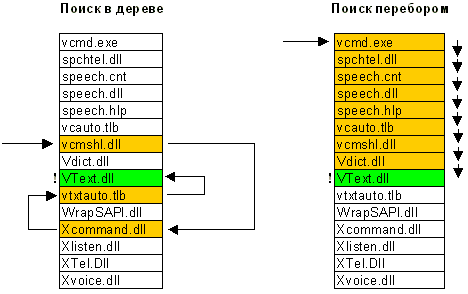
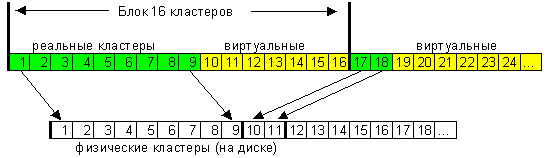
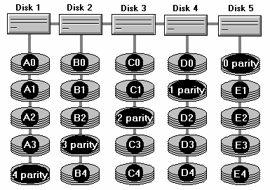

Файловая система NTFS (статья)
Файловая система NTFS
Часть 1. Физическая структура NTFS
Начнем с общих фактов. Раздел NTFS, теоретически, может быть почти какого угодно размера. Предел, конечно, есть, но я даже не буду указывать его, так как его с запасом хватит на последующие сто лет развития вычислительной техники - при любых темпах роста. Как обстоит с этим дело на практике? Почти так же. Максимальный размер раздела NTFS в данный момент ограничен лишь размерами жестких дисков. NT4, правда, будет испытывать проблемы при попытке установки на раздел, если хоть какая-нибудь его часть отступает более чем на 8 Гб от физического начала диска, но эта проблема касается лишь загрузочного раздела.
Лирическое отступление. Метод инсталляции NT4.0 на пустой диск довольно оригинален и может навести на неправильные мысли о возможностях NTFS. Если вы укажете программе установки, что желаете отформатировать диск в NTFS, максимальный размер, который она вам предложит, будет всего 4 Гб. Почему так мало, если размер раздела NTFS на самом деле практически неограничен? Дело в том, что установочная секция просто не знает этой файловой системы :) Программа установки форматирует этот диск в обычный FAT, максимальный размер которого в NT составляет 4 Гбайт (с использованием не совсем стандартного огромного кластера 64 Кбайта), и на этот FAT устанавливает NT. А вот уже в процессе первой загрузки самой операционной системы (еще в установочной фазе) производится быстрое преобразование раздела в NTFS; так что пользователь ничего и не замечает, кроме странного "ограничения" на размер NTFS при установке. :)Структура раздела - общий взгляд
Как и любая другая система, NTFS делит все полезное место на кластеры - блоки данных, используемые единовременно. NTFS поддерживает почти любые размеры кластеров - от 512 байт до 64 Кбайт, неким стандартом же считается кластер размером 4 Кбайт. Никаких аномалий кластерной структуры NTFS не имеет, поэтому на эту, в общем-то, довольно банальную тему, сказать особо нечего.
Диск NTFS условно делится на две части. Первые 12% диска отводятся под так называемую MFT зону - пространство, в которое растет метафайл MFT (об этом ниже). Запись каких-либо данных в эту область невозможна. MFT-зона всегда держится пустой - это делается для того, чтобы самый главный, служебный файл (MFT) не фрагментировался при своем росте. Остальные 88% диска представляют собой обычное пространство для хранения файлов.

Свободное место диска, однако, включает в себя всё физически свободное место - незаполненные куски MFT-зоны туда тоже включаются. Механизм использования MFT-зоны таков: когда файлы уже нельзя записывать в обычное пространство, MFT-зона просто сокращается (в текущих версиях операционных систем ровно в два раза), освобождая таким образом место для записи файлов. При освобождении места в обычной области MFT зона может снова расширится. При этом не исключена ситуация, когда в этой зоне остались и обычные файлы: никакой аномалии тут нет. Что ж, система старалась оставить её свободной, но ничего не получилось. Жизнь продолжается... Метафайл MFT все-таки может фрагментироваться, хоть это и было бы нежелательно.
MFT и его структура
Файловая система NTFS представляет собой выдающееся достижение структуризации: каждый элемент системы представляет собой файл - даже служебная информация. Самый главный файл на NTFS называется MFT, или Master File Table - общая таблица файлов. Именно он размещается в MFT зоне и представляет собой централизованный каталог всех остальных файлов диска, и, как не парадоксально, себя самого. MFT поделен на записи фиксированного размера (обычно 1 Кбайт), и каждая запись соответствует какому либо файлу (в общем смысле этого слова). Первые 16 файлов носят служебный характер и недоступны операционной системе - они называются метафайлами, причем самый первый метафайл - сам MFT. Эти первые 16 элементов MFT - единственная часть диска, имеющая фиксированное положение. Интересно, что вторая копия первых трех записей, для надежности - они очень важны - хранится ровно посередине диска. Остальной MFT-файл может располагаться, как и любой другой файл, в произвольных местах диска - восстановить его положение можно с помощью его самого, "зацепившись" за самую основу - за первый элемент MFT.
Метафайлы
Первые 16 файлов NTFS (метафайлы) носят служебный характер. Каждый из них отвечает за какой-либо аспект работы системы. Преимущество настолько модульного подхода заключается в поразительной гибкости - например, на FAT-е физическое повреждение в самой области FAT фатально для функционирования всего диска, а NTFS может сместить, даже фрагментировать по диску, все свои служебные области, обойдя любые неисправности поверхности - кроме первых 16 элементов MFT.
Метафайлы находятся корневом каталоге NTFS диска - они начинаются с символа имени "$", хотя получить какую-либо информацию о них стандартными средствами сложно. Любопытно, что и для этих файлов указан вполне реальный размер - можно узнать, например, сколько операционная система тратит на каталогизацию всего вашего диска, посмотрев размер файла $MFT. В следующей таблице приведены используемые в данный момент метафайлы и их назначение.
$MFT |
сам MFT |
$MFTmirr |
копия первых 16 записей MFT, размещенная посередине диска |
$LogFile |
файл поддержки журналирования (см. ниже) |
$Volume |
служебная информация - метка тома, версия файловой системы, т.д. |
$AttrDef |
список стандартных атрибутов файлов на томе |
$. |
корневой каталог |
$Bitmap |
карта свободного места тома |
$Boot |
загрузочный сектор (если раздел загрузочный) |
$Quota |
файл, в котором записаны права пользователей на использование дискового пространства (начал работать лишь в NT5) |
$Upcase |
файл - таблица соответствия заглавных и прописных букв в имен файлов на текущем томе. Нужен в основном потому, что в NTFS имена файлов записываются в Unicode, что составляет 65 тысяч различных символов, искать большие и малые эквиваленты которых очень нетривиально. |
Итак, у системы есть файлы - и ничего кроме файлов. Что включает в себя это понятие на NTFS?
| · | Прежде всего, обязательный элемент - запись в MFT, ведь, как было сказано ранее, все файлы диска упоминаются в MFT. В этом месте хранится вся информация о файле, за исключением собственно данных. Имя файла, размер, положение на диске отдельных фрагментов, и т.д. Если для информации не хватает одной записи MFT, то используются несколько, причем не обязательно подряд. |
| · | Опциональный элемент - потоки данных файла. Может показаться странным определение "опциональный", но, тем не менее, ничего странного тут нет. Во-первых, файл может не иметь данных - в таком случае на него не расходуется свободное место самого диска. Во-вторых, файл может иметь не очень большой размер. Тогда идет в ход довольно удачное решение: данные файла хранятся прямо в MFT, в оставшемся от основных данных месте в пределах одной записи MFT. Файлы, занимающие сотни байт, обычно не имеют своего "физического" воплощения в основной файловой области - все данные такого файла хранятся в одном месте - в MFT. |
Довольно интересно обстоит дело и с данными файла. Каждый файл на NTFS, в общем-то, имеет несколько абстрактное строение - у него нет как таковых данных, а есть потоки (streams). Один из потоков и носит привычный нам смысл - данные файла. Но большинство атрибутов файла - тоже потоки! Таким образом, получается, что базовая сущность у файла только одна - номер в MFT, а всё остальное опционально. Данная абстракция может использоваться для создания довольно удобных вещей - например, файлу можно "прилепить" еще один поток, записав в него любые данные - например, информацию об авторе и содержании файла, как это сделано в Windows 2000 (самая правая закладка в свойствах файла, просматриваемых из проводника). Интересно, что эти дополнительные потоки не видны стандартными средствами: наблюдаемый размер файла - это лишь размер основного потока, который содержит традиционные данные. Можно, к примеру, иметь файл нулевой длинны, при стирании которого освободится 1 Гбайт свободного места - просто потому, что какая-нибудь хитрая программа или технология прилепила в нему дополнительный поток (альтернативные данные) гигабайтового размера. Но на самом деле в текущий момент потоки практически не используются, так что опасаться подобных ситуаций не следует, хотя гипотетически они возможны. Просто имейте в виду, что файл на NTFS - это более глубокое и глобальное понятие, чем можно себе вообразить просто просматривая каталоги диска. Ну и напоследок: имя файла может содержать любые символы, включая полый набор национальных алфавитов, так как данные представлены в Unicode - 16-битном представлении, которое дает 65535 разных символов. Максимальная длина имени файла - 255 символов.
Каталоги
Каталог на NTFS представляет собой специфический файл, хранящий ссылки на другие файлы и каталоги, создавая иерархическое строение данных на диске. Файл каталога поделен на блоки, каждый из которых содержит имя файла, базовые атрибуты и ссылку на элемент MFT, который уже предоставляет полную информацию об элементе каталога. Внутренняя структура каталога представляет собой бинарное дерево. Вот что это означает: для поиска файла с данным именем в линейном каталоге, таком, например, как у FAT-а, операционной системе приходится просматривать все элементы каталога, пока она не найдет нужный. Бинарное же дерево располагает имена файлов таким образом, чтобы поиск файла осуществлялся более быстрым способом - с помощью получения двухзначных ответов на вопросы о положении файла. Вопрос, на который бинарное дерево способно дать ответ, таков: в какой группе, относительно данного элемента, находится искомое имя - выше или ниже? Мы начинаем с такого вопроса к среднему элементу, и каждый ответ сужает зону поиска в среднем в два раза. Файлы, скажем, просто отсортированы по алфавиту, и ответ на вопрос осуществляется очевидным способом - сравнением начальных букв. Область поиска, суженная в два раза, начинает исследоваться аналогичным образом, начиная опять же со среднего элемента.
Вывод - для поиска одного файла среди 1000, например, FAT придется осуществить в среднем 500 сравнений (наиболее вероятно, что файл будет найден на середине поиска), а системе на основе дерева - всего около 12-ти (2^10 = 1024). Экономия времени поиска налицо. Не стоит, однако думать, что в традиционных системах (FAT) всё так запущено: во-первых, поддержание списка файлов в виде бинарного дерева довольно трудоемко, а во-вторых - даже FAT в исполнении современной системы (Windows2000 или Windows98) использует сходную оптимизацию поиска. Это просто еще один факт в вашу копилку знаний. Хочется также развеять распространенное заблуждение (которое я сам разделял совсем еще недавно) о том, что добавлять файл в каталог в виде дерева труднее, чем в линейный каталог: это достаточно сравнимые по времени операции - дело в том, что для того, чтобы добавить файл в каталог, нужно сначала убедится, что файла с таким именем там еще нет :) - и вот тут-то в линейной системе у нас будут трудности с поиском файла, описанные выше, которые с лихвой компенсируют саму простоту добавления файла в каталог.
Какую информацию можно получить, просто прочитав файл каталога? Ровно то, что выдает команда dir. Для выполнения простейшей навигации по диску не нужно лазить в MFT за каждым файлом, надо лишь читать самую общую информацию о файлах из файлов каталогов. Главный каталог диска - корневой - ничем не отличается об обычных каталогов, кроме специальной ссылки на него из начала метафайла MFT.
Журналирование
NTFS - отказоустойчивая система, которая вполне может привести себя в корректное состояние при практически любых реальных сбоях. Любая современная файловая система основана на таком понятии, как транзакция - действие, совершаемое целиком и корректно или не совершаемое вообще. У NTFS просто не бывает промежуточных (ошибочных или некорректных) состояний - квант изменения данных не может быть поделен на до и после сбоя, принося разрушения и путаницу - он либо совершен, либо отменен.
Пример 1: осуществляется запись данных на диск. Вдруг выясняется, что в то место, куда мы только что решили записать очередную порцию данных, писать не удалось - физическое повреждение поверхности. Поведение NTFS в этом случае довольно логично: транзакция записи откатывается целиком - система осознает, что запись не произведена. Место помечается как сбойное, а данные записываются в другое место - начинается новая транзакция.
Пример 2: более сложный случай - идет запись данных на диск. Вдруг, бах - отключается питание и система перезагружается. На какой фазе остановилась запись, где есть данные, а где чушь? На помощь приходит другой механизм системы - журнал транзакций. Дело в том, что система, осознав свое желание писать на диск, пометила в метафайле $LogFile это свое состояние. При перезагрузке это файл изучается на предмет наличия незавершенных транзакций, которые были прерваны аварией и результат которых непредсказуем - все эти транзакции отменяются: место, в которое осуществлялась запись, помечается снова как свободное, индексы и элементы MFT приводятся в с состояние, в котором они были до сбоя, и система в целом остается стабильна. Ну а если ошибка произошла при записи в журнал? Тоже ничего страшного: транзакция либо еще и не начиналась (идет только попытка записать намерения её произвести), либо уже закончилась - то есть идет попытка записать, что транзакция на самом деле уже выполнена. В последнем случае при следующей загрузке система сама вполне разберется, что на самом деле всё и так записано корректно, и не обратит внимания на "незаконченную" транзакцию.
И все-таки помните, что журналирование - не абсолютная панацея, а лишь средство существенно сократить число ошибок и сбоев системы. Вряд ли рядовой пользователь NTFS хоть когда-нибудь заметит ошибку системы или вынужден будет запускать chkdsk - опыт показывает, что NTFS восстанавливается в полностью корректное состояние даже при сбоях в очень загруженные дисковой активностью моменты. Вы можете даже оптимизировать диск и в самый разгар этого процесса нажать reset - вероятность потерь данных даже в этом случае будет очень низка. Важно понимать, однако, что система восстановления NTFS гарантирует корректность файловой системы, а не ваших данных. Если вы производили запись на диск и получили аварию - ваши данные могут и не записаться. Чудес не бывает.
Сжатие
Файлы NTFS имеют один довольно полезный атрибут - "сжатый". Дело в том, что NTFS имеет встроенную поддержку сжатия дисков - то, для чего раньше приходилось использовать Stacker или DoubleSpace. Любой файл или каталог в индивидуальном порядке может хранится на диске в сжатом виде - этот процесс совершенно прозрачен для приложений. Сжатие файлов имеет очень высокую скорость и только одно большое отрицательное свойство - огромная виртуальная фрагментация сжатых файлов, которая, правда, никому особо не мешает. Сжатие осуществляется блоками по 16 кластеров и использует так называемые "виртуальные кластеры" - опять же предельно гибкое решение, позволяющее добиться интересных эффектов - например, половина файла может быть сжата, а половина - нет. Это достигается благодаря тому, что хранение информации о компрессированности определенных фрагментов очень похоже на обычную фрагментацию файлов: например, типичная запись физической раскладки для реального, несжатого, файла:
кластеры файла с 1 по 43-й хранятся в кластерах диска начиная с 400-го кластеры файла с 44 по 52-й хранятся в кластерах диска начиная с 8530-го ...Физическая раскладка типичного сжатого файла:
кластеры файла с 1 по 9-й хранятся в кластерах диска начиная с 400-го кластеры файла с 10 по 16-й нигде не хранятся кластеры файла с 17 по 18-й хранятся в кластерах диска начиная с 409-го кластеры файла с 19 по 36-й нигде не хранятся Видно, что сжатый файл имеет "виртуальные" кластеры, реальной информации в которых нет. Как только система видит такие виртуальные кластеры, она тут же понимает, что данные предыдущего блока, кратного 16-ти, должны быть разжаты, а получившиеся данные как раз заполнят виртуальные кластеры - вот, по сути, и весь алгоритм.
Безопасность
NTFS содержит множество средств разграничения прав объектов - есть мнение, что это самая совершенная файловая система из всех ныне существующих. В теории это, без сомнения, так, но в текущих реализациях, к сожалению, система прав достаточно далека от идеала и представляет собой хоть и жесткий, но не всегда логичный набор характеристик. Права, назначаемые любому объекту и однозначно соблюдаемые системой, эволюционируют - крупные изменения и дополнения прав осуществлялись уже несколько раз и к Windows 2000 все-таки они пришли к достаточно разумному набору.
Права файловой системы NTFS неразрывно связаны с самой системой - то есть они, вообще говоря, необязательны к соблюдению другой системой, если ей дать физический доступ к диску. Для предотвращения физического доступа в Windows2000 (NT5) всё же ввели стандартную возможность - об этом см. ниже. Система прав в своем текущем состоянии достаточно сложна, и я сомневаюсь, что смогу сказать широкому читателю что-нибудь интересное и полезное ему в обычной жизни. Если вас интересует эта тема - вы найдете множество книг по сетевой архитектуре NT, в которых это описано более чем подробно.
На этом описание строение файловой системы можно закончить, осталось описать лишь некоторое количество просто практичных или оригинальных вещей.
Hard Links
Эта штука была в NTFS с незапамятных времен, но использовалась очень редко - и тем не менее: Hard Link - это когда один и тот же файл имеет два имени (несколько указателей файла-каталога или разных каталогов указывают на одну и ту же MFT запись). Допустим, один и тот же файл имеет имена 1.txt и 2.txt: если пользователь сотрет файл 1, останется файл 2. Если сотрет 2 - останется файл 1, то есть оба имени, с момента создания, совершенно равноправны. Файл физически стирается лишь тогда, когда будет удалено его последнее имя.
Symbolic Links (NT5)
Гораздо более практичная возможность, позволяющая делать виртуальные каталоги - ровно так же, как и виртуальные диски командой subst в DOSе. Применения достаточно разнообразны: во-первых, упрощение системы каталогов. Если вам не нравится каталог Documents and settings\Administrator\Documents, вы можете прилинковать его в корневой каталог - система будет по прежнему общаться с каталогом с дремучим путем, а вы - с гораздо более коротким именем, полностью ему эквивалентным. Для создания таких связей можно воспользоваться программой junction (junction.zip (15 Kb), 36 кб), которую написал известный специалист Mark Russinovich (http://www.sysinternals.com). Программа работает только в NT5 (Windows 2000), как и сама возможность.
Для удаления связи можно воспользоваться стандартной командой rd.
ВНИМАНИЕ: Попытка уделения связи с помощью проводника или других файловых менеджеров, не понимающих виртуальную природу каталога (например, FAR), приведет к удалению данных, на которые ссылается ссылка! Будьте осторожны.
Шифрование (NT5)
Полезная возможность для людей, которые беспокоятся за свои секреты - каждый файл или каталог может также быть зашифрован, что не даст возможность прочесть его другой инсталляцией NT. В сочетании со стандартным и практически непрошибаемым паролем на загрузку самой системы, эта возможность обеспечивает достаточную для большинства применений безопасность избранных вами важных данных.
Часть 2. Особенности дефрагментации NTFS
Вернемся к одному достаточно интересному и важному моменту - фрагментации и дефрагментации NTFS. Дело в том, что ситуация, сложившаяся с этими двумя понятиями в настоящий момент, никак не может быть названа удовлетворительной. В самом начале утверждалось, что NTFS не подвержена фрагментации файлов. Это оказалось не совсем так, и утверждение сменили - NTFS препятствует фрагментации. Оказалось, что и это не совсем так. То есть она, конечно, препятствует, но толк от этого близок к нулю... Сейчас уже понятно, что NTFS - система, которая как никакая другая предрасположена к фрагментации, что бы ни утверждалось официально. Единственное что - логически она не очень от этого страдает. Все внутренние структуры построены таким образом, что фрагментация не мешает быстро находить фрагменты данных. Но от физического последствия фрагментации - лишних движений головок - она, конечно, не спасает. И поэтому - вперед и с песней...
К истокам проблемы...
Как известно, система сильнее всего фрагментирует файлы когда свободное место кончается, когда приходится использовать мелкие дырки, оставшиеся от других файлов. Тут возникает первое свойство NTFS, которое прямо способствует серьезной фрагментации.
Диск NTFS поделен на две зоны. В начала диска идет MFT зона - зона, куда растет MFT, Master File Table. Зона занимает минимум 12% диска, и запись данных в эту зону невозможна. Это сделано для того, чтобы не фрагментировался хотя бы MFT. Но когда весь остальной диск заполняется - зона сокращается ровно в два раза :). И так далее. Таким образом мы имеем не один заход окончания диска, а несколько. В результате если NTFS работает при диске, заполненном на около 90% - фрагментация растет как бешенная.
Попутное следствие - диск, заполненный более чем на 88%, дефрагментировать почти невозможно - даже API дефрагментации не может перемещать данные в MFT зону. Может оказаться так, что у нас не будет свободного места для маневра.Далее. NTFS работает себе и работает, и всё таки фрагментируется - даже в том случае, если свободное место далеко от истощения. Этому способствует странный алгоритм нахождения свободного места для записи файлов - второе серьезное упущение. Алгоритм действий при любой записи такой: берется какой-то определенный объем диска и заполняется файлом до упора. Причем по очень интересному алгоритму: сначала заполняются большие дырки, потом маленькие. Т.е. типичное распределение фрагментов файла по размеру на фрагментированной NTFS выглядит так (размеры фрагментов):
16 - 16 - 16 - 16 - 16 - [скачек назад] - 15 - 15 - 15 - [назад] - 14 - 14 - 14 .... 1 - 1 - 1 -1 - 1...
Так процесс идет до самых мелких дырок в 1 кластер, несмотря на то, что на диске наверняка есть и гораздо более большие куски свободного места.
Вспомните сжатые файлы - при активной перезаписи больших объемов сжатой информации на NTFS образуется гигантское количество "дырок" из-за перераспределения на диске сжатых объемов - если какой-либо участок файла стал сжиматься лучше или хуже, его приходится либо изымать из непрерывной цепочки и размещать в другом месте, либо стягивать в объеме, оставляя за собой дырку.
Смысл в сего этого вступления в пояснении того простого факта, что никак нельзя сказать, что NTFS препятствует фрагментации файлов. Наоборот, она с радостью их фрагментирует. Фрагментация NTFS через пол года работы доведет до искреннего удивления любого человека, знакомого с работой файловой системой. Поэтому приходится запускать дефрагментатор. Но на этом все наши проблемы не заканчиваются, а, увы, только начинаются...
Средства решения?
В NT существует стандартное API дефрагментации. Обладающее интересным ограничением для перемещения блоков файлов: за один раз можно перемещать не менее 16 кластеров (!), причем начинаться эти кластеры должны с позиции, кратной 16 кластерам в файле. В общем, операция осуществляется исключительно по 16 кластеров. Следствия:
| 1. | В дырку свободного места менее 16 кластеров нельзя ничего переместить (кроме сжатых файлов, но это неинтересные в данный момент тонкости). |
| 1. | Файл, будучи перемещенный в другое место, оставляет после себя (на новом месте) "временно занятое место", дополняющее его по размеру до кратности 16 кластерам. |
| 1. | При попытке как-то неправильно ("не кратно 16") переместить файл результат часто непредсказуем. Что-то округляется, что-то просто не перемещается… Тем не менее, всё место действия щедро рассыпается "временно занятым местом". |
"Временно занятое место" служит для облегчения восстановления системы в случае аппаратного сбоя и освобождается через некоторое время, обычно где-то пол минуты.
Тем не менее, логично было бы использовать это API, раз он есть. Его и используют. Поэтому процесс стандартной дефрагментации, с поправками на ограниченность API, состоит из следующих фаз (не обязательно в этом порядке):
| · | Вынимание файлов из MFT зоны. Не специально - просто обратно туда их положить не представляется возможным :) Безобидная фаза, и даже в чем то полезная. |
| · | Дефрагментация файлов. Безусловно, полезный процесс, несколько, правда, осложняемый ограничениями кратности перемещений - файлы часто приходится перекладывать сильнее, чем это было бы логично сделать по уму. |
| · | Дефрагментация MFT, виртуалки (pagefile.sys) и каталогов. Возможна через API только в Windows2000, иначе - при перезагрузке, отдельным процессом, как в старом Diskeeper-е. |
| · | Складывание файлов ближе к началу - так называемая дефрагментация свободного места. Вот это - воистину страшный процесс... |
Допустим, мы хотим положить файлы подряд в начало диска. Кладем один файл. Он оставляет хвост занятости дополнения до кратности 16. Кладем следующий - после хвоста, естественно. Через некоторое время, по освобождению хвоста, имеем дырку <16 кластеров размером. Которую потом невозможно заполнить через API дефрагментации! В результате, до оптимизации картина свободного места выглядела так: много дырок примерно одинакового размера. После оптимизации - одна дыра в конце диска, и много маленьких <16 кластеров дырок в заполненном файлами участке. Какие места в первую очередь заполняются? Правильно, находящиеся ближе к началу диска мелкие дырки <16 кластеров... Любой файл, плавно созданный на прооптимизированном диске, будет состоять из дикого числа фрагментов. Да, диск потом можно оптимизировать снова. А потом еще раз.. и еще.. и так - желательно каждую неделю. Бред? Реальность.
Таким образом, имеется два примерно равнозначных варианта. Первый - часто оптимизировать диск таким дефрагментатором, смиряясь при этом с дикой фрагментацией заново созданных файлов. Второй вариант - вообще ничего не трогать, и смириться с равномерной, но гораздо более слабой фрагментацией всех файлов на диске.
Пока есть всего один дефрагментатор, который игнорирует API дефрагментации и работает как-то более напрямую - Norton Speeddisk 5.0 для NT. Когда его пытаются сравнить со всеми остальными - Diskeeper, O&O defrag, т.д. - не упоминают этого главного, самого принципиального, отличия. Просто потому, что эта проблема тщательно скрывается, по крайней мере уж точно не афишируется на каждом шагу. Speeddisk - единственная на сегодняшний день программа, которая может оптимизировать диск полностью, не создавая маленьких незаполненных фрагментов свободного места. Стоит добавить также, что при помощи стандартного API невозможно дефрагментировать тома NTFS с кластером более 4 Кбайт, а SpeedDisk и это может.
К сожалению, в Windows 2000 поместили дефрагментатор, который работает через API, и, соответственно, плодит дырки <16 кластеров. Так что как только появится (если еще не появился) - так сразу надо качать Speeddisk для W2k.
Как некоторый вывод из всего этого: все остальные дефрагментаторы при одноразовом применении просто вредны. Если вы запускали его хоть раз - нужно запускать его потом хотя бы раз в месяц, чтобы избавится от фрагментации новоприбывающих файлов. В этом основная суть сложности дефрагментации NTFS теми средствами, которые сложились исторически.
Часть 3. Что выбрать?
Любая из представленных ныне файловых систем уходит своими корнями в глубокое прошлое - еще к 80-м годам. Да, NTFS, как это не странно - очень старая система! Дело в том, что долгое время персональные компьютеры пользовались лишь операционной системой DOS, которой и обязана своим появлением FAT. Но параллельно разрабатывались и тихо существовали системы, нацеленные на будущее. Две таких системы, получившие всё же широкое признание - NTFS, созданная для операционной системы Windows NT 3.1 еще в незапамятные времена, и HPFS - верная спутница OS/2.
Внедрение новых систем шло трудно - еще в 95м году, с выходом Windows95, ни у кого не было и мыслей о том, что что-то нужно менять - FAT получил второе дыхание посредством налепленной сверху заплатки "длинные имена", реализация которых там хоть и близка к идеально возможной без изменения системы, но всё же довольно бестолкова. Но в последующие годы необходимость перемен назрела окончательно, поскольку естественные ограничения FAT стали давать о себе знать. FAT32, появившаяся в Windows 95 OSR2, просто сдвинула рамки - не изменив сути системы, которая просто не дает возможности организовать эффективную работу с большим количеством данных.
HPFS (High Performance File System), активно применяемая до сих пор пользователями OS/2, показала себя достаточно удачной системой, но и она имела существенные недостатки - полное отсутствие средств автоматической восстанавливаемости, излишнюю сложность организации данных и невысокую гибкость.
NTFS же долго не могла завоевать персональные компьютеры из-за того, что для организации эффективной работы с её структурами данных требовались значительные объемы памяти. Системы с 4 или 8 Мбайт (стандарт 95-96 годов) были просто неспособны получить хоть какой-либо плюс от NTFS, поэтому за ней закрепилась не очень правильная репутация медленной и громоздкой системы. На самом деле это не соответствует действительности - современные компьютерные системы с памятью более 64 Мб получают просто огромный прирост производительности от использования NTFS.
В данной таблице сведены воедино все существенные плюсы и минусы распространенных в наше время систем, таких как FAT32, FAT и NTFS. Вряд ли разумно обсуждать другие системы, так как в настоящее время 97% пользователей делают выбор между Windows98, Windows NT4.0 и Windows 2000 (NT5.0), а других вариантов там просто нет.
| FAT | FAT32 | NTFS | |
Системы, её поддерживающие |
DOS, Windows9Х, NT всех версий |
Windows98, NT5 |
NT4, NT5 |
Максимальный размер тома |
2 Гбайт |
практически неограничен |
практически неограничен |
Макс. число файлов на томе |
примерно 65 тысяч |
практически не ограничено |
практически не ограничено |
Имя файла |
с поддержкой длинных имен - 255 символов, системный набор символов |
с поддержкой длинных имен - 255 символов, системный набор символов |
255 символов, любые символы любых алфавитов (65 тысяч разных начертаний) |
Возможные атрибуты файла |
Базовый набор |
Базовый набор |
всё, что придет в голову производителям программного обеспечения |
Безопасность |
нет |
нет |
да (начиная с NT5.0 встроена возможность физически шифровать данные) |
Сжатие |
нет |
нет |
да |
Устойчивость к сбоям |
средняя (система слишком проста и поэтому ломаться особо нечему :)) |
плохая (средства оптимизации по скорости привели к появлению слабых по надежности мест) |
полная - автоматическое восстановление системы при любых сбоях (не считая физические ошибки записи, когда пишется одно, а на самом деле записывается другое) |
Экономичность |
минимальная (огромные размеры кластеров на больших дисках) |
улучшена за счет уменьшения размеров кластеров |
максимальна. Очень эффективная и разнообразная система хранения данных |
Быстродействие |
высокое для малого числа файлов, но быстро уменьшается с появлением большого количества файлов в каталогах. результат - для слабо заполненных дисков - максимальное, для заполненных - плохое |
полностью аналогично FAT, но на дисках большого размера (десятки гигабайт) начинаются серьезные проблемы с общей организацией данных |
система не очень эффективна для малых и простых разделов (до 1 Гбайт), но работа с огромными массивами данных и внушительными каталогами организована как нельзя более эффективно и очень сильно превосходит по скорости другие системы |
Хотелось бы сказать, что если ваша операционная система - NT (Windows 2000), то использовать какую-либо файловую систему, отличную от NTFS - значит существенно ограничивать свое удобство и гибкость работы самой операционной системы. NT, а особенно Windows 2000, составляет с NTFS как бы две части единого целого - множество полезных возможностей NT напрямую завязано на физическую и логическую структуру файловой системы, и использовать там FAT или FAT32 имеет смысл лишь для совместимости - если у вас стоит задача читать эти диски из каких-либо других систем.
Хотелось бы выразить искреннюю признательность Андрею Шабалину (a.shabalin@public.mtu.ru), без которого эта статья просто не была бы написана, а даже будучи написанной, содержала бы много досадных неточностей.
Дмитрий Михайлов (dmitry.mih@mtu-net.ru, http://www.mtu-net.ru/pinetar/dm)Опубликовано -- 24 июля 2000 г
Надежность дисковой системы NT
Часть 4. Журналирование NTFS
Описание того простого факта, что NTFS является журналируемой системой, повергло многочисленных поклонников других файловых и операционных систем в искреннее возмущение. В многочисленных письмах, адресованных мне, NTFS называли системой с квази-журналированием или даже без журналирования вообще, ставя в противовес многочисленные файловые системы Unix. Мне пришло также много писем, указывающих на фатальные сбои NTFS, восстановится от которых не удалось - данные были потеряны. В данной части я попытаюсь, в меру своих сил и понимания, объяснить философию журналирования и средств защиты от сбоев NTFS, а также пояснить причины появления фатальных сбоев. Я постараюсь оправдать подход корпорации Microsoft, которая сделала всё именно так, как сделала - по крайней мере, я изложу причины реализованных технологических решений и те компромиссы, на которые пришлось пойти коллективу разработчиков NTFS.
Журналируемые операции
Прежде всего, хотелось бы рассказать о том, какие именно операции журналируются. Совершенно очевидно, что полный undo-файл, способный откатить абсолютно все операции, абсолютно невозможен как с точки зрения быстродействия, так и с точки зрения здравого смысла. Да, такое журналирование дало бы возможность восстановить большее число данных - например, при осуществлении перезаписи трех мегабайт в середине файла мы могли бы сначала сохранить новые данные в логе, затем переписать туда же предыдущие три мегабайта файла, и уж только затем осуществлять операции с реальными данными. Такой подход гарантировал бы полную определенность с судьбой информации - мы всегда смогли бы понять, какая часть данных уже записалась на диск, а какая находится в исходном, не обновленном состоянии. Он имеет всего один скромный недостаток - небольшая накладочка по быстродействию: для записи на диск трех мегабайт мы вынуждены будем осуществить разнообразные дисковые операции на объем в три раза больший - девять мегабайт. Да, полное журналирование также применяется - но в основном при работе с базами данных. Если вы желаете обеспечить полное журналирование каких-либо данных, вы можете поставить MS SQL или даже Oracle, который вообще не будет пользоваться средствами какой либо файловой системы и обеспечит сохранность ваших данных в любых разумных условиях. Сторонникам же полного журналирования файловой системы я могу ответить одно: решение сократить быстродействие операций записи в три раза, на мой взгляд, является слишком смелым для обязательного применения - и на домашних компьютерах, и на серверах.
Подход разработчиков NTFS был принципиально иным. Главный девиз был, видимо, не "надежность любой ценой", а "неизменность быстродействия". Журналирование просто не должно было помешать работе файловой системы. Первый логичный шаг - отменить полное журналирование как абсолютно неприемлемое с точки зрения быстродействия. В NTFS применяется журналирование логических структур, а не данных пользователя - отсюда и идет фраза, что сохранность данных не гарантируется, но, тем не менее, корректное состояние самой системы будет поддерживаться. То, что NTFS не журналирует данные файлов, приводит на практике к одному варианту потери данных - в том же гипотетическом случае записи трех мегабайт, в случае сбоя в процессе записи никогда уже не удастся установить, какая часть данных записалась, а какая осталась неизменна. Операции, которые, тем не менее, журналируются системой - это операции со структурами самой системы, то есть с файлами и каталогами: добавление файлов, переименование, перенос, создание и удаление (освобождение свободного места). Журналируются также и операции дефрагментации - то есть перемещения фрагментов файлов. Одним словом, все логические операции журналированы.
Отложенная запись и контрольные точки журналирования
Известно, что любая современная система для ускорения файловых операций вынуждена использовать кэширование, в том числе - кэширование операций записи. Так называемая отложенная запись - принцип кэширования, при котором данные, предназначенные для записи на диск, некоторое время сохраняются в кэше и лишь в свободное от других занятий время сохраняются физически. Отложенная запись существенно повышает эффективность дисковых операций, так как такое кэширование группирует множество операций в одну - это особенно эффективно, если запись производится в компактные участки диска. Еще один плюс отложенной записи - не мешать более нужным операциям чтения, и осуществлять запись только тогда, когда система свободна и ей не требуется доступ к диску для других нужд. Как согласовать отложенную запись с журналированием? Это довольно сложный вопрос, так как откладывание записи делает возможным потерю тех данных, которые находились в очереди на физическую запись и не успели записаться на диск до сбоя. Самое неприятное здесь даже не потеря данных, а то, что происходит рассогласование времени записи: какие-то служебные области могут быть обновлены, а какие-то смежные по смыслу - еще нет, так как их обновление могло отложится еще на пару секунд и не состоятся из-за сбоя.
NTFS справляется с этими проблемами с помощью смысловой интеграции операций отложенной записи и ведения журнала. При попытке начать журналируемую операцию в лог тут же записывается намерение - например, стереть файл. Это случается без задержек - на этом этапе отложенная запись не работает: это плата за присутствие журналирования, которой нельзя избежать. Но вот все остальные операции уже идут в задержанном режиме - то есть они могут состояться частично (могут еще в придачу и не в том порядке) или не состоятся вообще. Единственная задержанная операция, работа которой несколько отличается от простой записи - запись в лог об удачном завершении предыдущих транзакций, так называемая контрольная точка. Через определенные промежутки времени - обычно через каждые несколько секунд - система в обязательном порядке сбрасывает абсолютно все задержанные операции на диск. После произведения этой операции в журнал записывается простейшая запись - контрольная точка - которая говорит о том, что все предыдущие операции выполнены корректно на всех уровнях - как на логическом, так и на физическом.
Такой режим работы - с помощью записей и контрольных точек - с одной стороны, по прежнему гарантирует полностью корректную работу журналирования, а с другой стороны практически совершенно не приводит к замедлению работы: простановка контрольных точек производится, считай, мгновенно, а запись в журнал о начале операции соответствует по трудозатратам записи самих данных без отложенного кэширования. Реальная же запись, осуществляемая позже, в подавляющем числе случаев не мешает никаким операциям и не идет в ущерб производительности системы.
Проблемы отложенного журналирования: концепция дублирования информации
Вся вышеописанная теория достаточно хороша, но способна, тем не менее, вызвать очень неприятные последствия, если не учесть еще нескольких вещей, о которых и пойдет речь.
Рассмотрим такой случай: мы стираем файл. Журнал получил запись - "файл N стирается". Затем запаздывающему кэшу стало угодно осуществить сначала физическую пометку о том, что место, занимаемое файлом, освободилось, а уж только затем удалить файл из физических структур MFT и каталога. Допустим, диск находится в активной работе, и на освободившееся место тут же записывается другой файл. В этот момент происходит сбой. Система, загружаясь, исследует журнал и видит незавершенную операцию "файл N стирается" - вернее, как я уже описал выше, не незавершенную, а просто операцию, контрольная точка после которой отсутствует, что автоматически говорит о её незавершенности. Следующая фаза была бы "откат операции" - то есть восстановление файла. Одна незадача - место, физически занимаемое файлом, содержит уже другие данные.
Для недопущения таких ситуаций система, желающая ограничиться логическим журналированием, вынуждена применять принцип "временно занятого места". Место, освобожденное каким-либо объектом или записью о нем, не объявляется свободным до тех пор, пока физически не завершились все операции с логическими структурами. Данный механизм в NTFS, по видимому, не синхронизирован даже с проставлением контрольных точек, так как типичное время освобождения временно занятого места - около 30 секунд, точки же идут чаще.
Данный механизм применяется не только при стирании файла, но и при самых разных операциях: принцип журналирования - объект, убранный или перемещенный на новое место, должен иметь возможность корректно откатить своё "отбытие" - то есть данные, на которые ссылаются логические структуры удаляемого или перемещаемого объекта, необходимо еще на некоторое время зарезервировать как занятое место (диска/каталога). Это еще один шаг NTFS к полному журналированию, где специфическим журналом файловой информации служат сами данные освобождаемых областей, не уничтожаемые физически.
Допущения, обеспечивающие надежность
Ну хорошо, скажете вы, всё так замечательно - но почему же тогда разделы NTFS всё же летят?.. Сейчас я постараюсь объяснить принципы, которые приводит к тому, что вышеописанная модель сможет обеспечить полную восстанавливаемость логических структур.
| · | Жесткий диск, в штатном режиме, должен записать именно то и именно туда, что и куда ему сказано было записать операционной системой. Данный принцип нарушается в случае, если система имеет ненадежный шлейф, процессор, память или контроллер - и это самая распространенная причина сбоев NTFS. Вам поможет: неразогнанный процессор, дорогая (качественная) память, хорошая материнская плата и протокол UDMA, обеспечивающий контроль и восстановление ошибок на участке контроллер-диск. |
| · | Жесткий диск, в случае аварии, отключения питания или получения от контроллера сигнала "сброс" (в случае внезапной перезагрузки материнской платы) обязан корректно завершить запись данных текущего физического сектора, если таковая производилась на момент аварии. Промежуточное состояние сектора не допускается. Вам помогут современные винчестеры, которые могут осуществить данную операцию даже в случае полного пропадания питания - у них хватит буферизированной в конденсаторах энергии, и их логика рассчитана на корректное поведение в случае отказа питания при записи. |
| · | Диск обязан мгновенно осуществить запись данных, отправленных с флагом "не кэшировать". Дело в том, что многие современные диски или контроллеры обеспечивают задержанную запись. Метафайлы NTFS обновляются в режиме "писать сразу", и контроллер/диск обязан выполнять это требование. |
| · | Жесткий диск обязан обеспечить чтение именно тех данных, которые были записаны. В случае невозможности прочесть данные выдается сигнал "ошибка". Диск не имеет права возвращать ошибочные данные (возможно, лишь частично некорректные) без сигнала об ошибке. Все современные жесткие диски имеют контрольные суммы секторов и жестко следуют этой логике поведения. |
Четкое выполнение этих требований полностью гарантирует надежную работу NTFS. Структура файловой системы не будет содержать существенных ошибок даже после сбоя. Некоторые несущественные ошибки всё же появляются из-за того, что логика журналирования часто пытается завершить недоделанные операции - например, то же удаление файла - тогда как полную надежность обеспечивал бы только безусловный откат всего, что находится после последней контрольной точки. Малые несоответствия, рождающиеся из этих попыток, относятся к избыточной информации системы безопасности, не представляют никакой реальной опасности для данных - они действительно незначительны. Суть этих несоответствий чаще всего заключается в том, что на диске остаются "лишние" данные о тех режимах доступов, которые уже не понадобятся системе. Их прочистка - дело сугубо повышения производительности, как, например, дефрагментация, поэтому их наличие не является на самом деле ошибкой. В случае же обнаружения серьезных, реальных, проблем драйвер сам установит флажок тома "грязный", что проинструктирует систему проверить том при следующем его монтировании.
Я с большим сожалением должен сказать, что подавляющее большинство фатальных ошибок NTFS происходит по вине аппаратуры, не выполняющей эти элементарные требования. Да, я понимаю, абсолютной надежности не бывает. Но Microsoft пошел по пути разделения труда - за надежность вашей аппаратуры корпорация ответственности не несет. Мой компьютер на 70% не попадает в список совместимого с Windows 2000 оборудования, и то же самое можно сказать про почти любую реальную машину, функционирующую на просторах бывшего СССР. Особенно это относится к любителям разгонять компьютеры. Запомните раз и навсегда: вы с огромной степенью вероятности угробите NTFS в первый же год работы, если ваш процессор - 333, разогнанный на 415. И даже не раз... Мне очень жаль, но это действительно так. От любых сбоев корректного компьютера NTFS защитит, но вот от записи случайных данных в бут-сектор (копия которого, кстати, хранится в самом конце раздела) и в MFT система просто не страхуется. Извините.
Часть 5. Программный RAID
Журналирование NTFS, как уже указывалось ранее, ни в коей мере не гарантирует от сбоев с потерей пользовательской информации. Между тем, NT предлагает несколько вариантов создания систем, где, в разумных условиях, гарантируется абсолютно всё. Можно также использовать большее число дисков для обеспечения не повышенной надежности, а, наоборот, повышенной скорости - или того и другого одновременно. О таких конфигурациях и пойдет речь в этой части статьи.
RAID (Redundant Array of Inexpensive Disks) - избыточный массив недорогих дисков. Технология, заключающаяся в одновременном использовании нескольких дисковых устройств для обеспечения характеристик надежности или скорости, отсутствующих у накопителей в отдельности.Windows NT поддерживает на программном уровне три уровня RAID (так называются стратегии работы дисковых массивов), краткие характеристики которых сведены в следующую таблицу.
Быстродействие, по сравнению с обычными дисками |
Надежность |
Общее дисковое пространство |
|
RAID 0 Существенное повышение производительности за счет дублирования дисков. |
Теоретически, в условиях некоторых (например, линейных) операций скорость чтения/записи, повышается во столько раз, сколько дисков задействовано в системе. Реально увеличение быстродействия меньше - процентов 50%-90% от этого числа, что всё равно очень существенно. |
Понижается - фатальный сбой одного из дисков вызовет потерю данных. |
Равно сумме объемов составляющих массив дисков |
RAID 1 Повышение надежности за счет дублирования информации. |
Скорость чтения теоретически повышается в число раз, соответствующее числу дисков. Реализованный в NT алгоритм не оптимален и приводит к гораздо более скромному увеличению быстродействия. Скорость записи снижается, особенно в случае не до конца многозадачных дисковых контроллеров. |
Потеря данных возможна лишь в случае отказа сразу всех дисков или повреждения одного и того же участка информации на всех дисках. |
Остается неизменным (увеличение доступного дискового пространства за счет добавочных дисков не происходит). |
RAID 5 Комбинация RAID 1 и RAID 0 - более эффективное использование дополнительных дисков. |
Скорость чтения повышается аналогичным RAID 0 образом, но число дисков, влияющих на быстродействие, следует уменьшить на один. Т.е. три диска RAID 5 обладают примерно такой же скоростью чтения, как и два диска RAID 0. Скорость записи больше, чем у каждого диска в отдельности, но в целом невысока. |
Потеря данных возможна при выходе из строя двух дисков набора. Выход из строя одного из дисков существенно снижает скорость работы всего массива и является, по сути, аварийной ситуацией, хоть и без потери данных. |
Увеличивается. |
Остановимся подробнее на каждом из типов RAID-а.
RAID 0 (параллельные диски)
Данная стратегия направлена исключительно на повышение производительности. Несколько дисков хранят части дисковой структуры, которые собираются в один том лишь при наличии всех дисков массива.
Простейшая реализация RAID 0 из двух, например, дисков - указание на то, что каждый первый сектор тома (или любой другой объем информации) расположен на физическом диске A, а каждый второй - на диске B. Такая жесткая стратегия дает возможность избежать каких-либо дополнительных структур для хранения информации о том, где находятся какие данные. Скорость чтения, как и записи равны и зависят от числа дисков:
| · | Быстродействие операции по работе со случайно расположенными данными подчиняются следующей схеме: всё зависит от вероятности того, что диск, на который мы хотим записать очередную порцию информации, свободен и готов мгновенно выполнить наш запрос. Например, RAID 0 из двух дисков: при осуществлении операции одним из дисков и поступлении дополнительной команды на работу с дисковой системой вероятность того, что для выполнения команды нам придется тревожить свободный в данный момент диск составляет 50% - это соответствует общему увеличению производительности случайных операций в полтора раза. Если же используется, к примеру, массив из десяти дисков, то вероятность какой-либо операции попасть на уже занятый накопитель составляет всего 10% - то есть производительность повышается в девять раз. Любителям строгой теории вероятности хочу заметить, что при таких подсчетах не учитываются некоторые факторы реальной работы систем, но цифры, тем не менее, имеют именно такой порядок. |
| · | Последовательные операции - чтение или запись последовательных участков - проходят практически всегда в n раз быстрее, чем на отдельном физическом диске, где n - число дисков в наборе. Это происходит потому, что вероятность в следующей операции попасть на свободный диск составляет 100% - ведь операции осуществляются последовательными блоками, которые равномерно раскидываются по дискам. |
В качестве некоторого вывода - RAID 0 в любом случае существенно повышает быстродействие линейных операций, а с увеличением количества дисков, входящих в набор, существенно повышается скорость работы и со случайными данными. Для эффективной работы с дисковой системой в режиме RAID 0 просто необходим многозадачный режим работы контроллера, а желательно даже разных контроллеров, обеспечивающих доступ к разным дискам. Обязательным условием такой работы на интерфейсах IDE являются Bus-Mastering драйвера. Windows 2000 имеет встроенные драйвера, автоматически включающие этот режим для всех распространенных IDE контроллеров, для NT4 же могут понадобится дополнительные драйвера или изменения ключей реестра.
Надежность RAID 0 низка - отказ каждого диска является фатальным сбоем, точно так же, как и отказ накопителя в случае работы с обычными разделами.
Вероятность сбоя системы в целом только повышается - чем больше дисков вы используете, тем выше вероятность отказа хоть одного из них и, соответственно, потери какой-то части данных тома.
RAID 1 (зеркальные диски)
Самый простой способ обеспечения безопасности данных - создать копию двух дисков. Запись осуществляется на оба диска сразу, что приводит к замедлению этого процесса, тогда как чтение - с того диска, который в данный момент свободен - если, конечно, система способна эффективно осуществить такое чтение (необходимо наличие Bus-Mastering). Реализованный в NT алгоритм, к сожалению, не совсем оптимален и приводит к гораздо более скромному увеличению быстродействия чтения.
Некоторая сложность работы RAID 1 в программном режиме заключается в том, что часто система не может быть до конца уверена в идентичности данных двух дисков. Операция сверки двух физических дисков после серьезного сбоя может затянутся на часы и быть очень некстати, поэтому использовать программный RAID 1 следует очень осмотрительно. Если вы решаетесь на увеличение дисковых массивов в несколько раз только ради надежности, возможно, вам стоит приобрести аппаратный RAID контроллер, который, к тому же, обеспечит замену вышедших из строя дисков прямо на ходу и будет следить за синхронностью данных сам.
В любом случае, даже полный отказ одного из дисков не приводит к потере данных, так как диски полностью зеркальны.
RAID 5 (параллельные диски с четностью)
Данная стратегия представляется в настоящее время наиболее удачной и эффективной схемой работы RAID, состоящих из трех и более дисков. Информация дополняется так называемыми данными четности (parity), которые размещаются на другом физическом диске, нежели реальные данные, контролируемые этой информацией.
Концепцию четности можно понять, например, так: допустим, у нас есть пять бит - например, набор {0, 1, 1, 0, 1}. Мы формируем еще бит - бит четности, шестой, по такому правилу - если число единиц в предыдущих пяти битах четно, он будет равен 1, если нет - 0. В нашем случае число единиц равняется трем, т.е. нечетному числу - наш набор дополнился числом 0 и превратился в {0, 1, 1, 0, 1, <0>}. Допустим, набору данных причинен урон - {0, X, 1, 0, 1, <0>}. С помощью правила, гласящего нам, что число единиц должно быть нечетно (последний бит), мы можем догадаться, что на месте X стояла единичка. Наш получившийся набор из шести бит (5 бит данных и 1 бит четности) избыточен и может грамотно скорректировать потерю любого из своих шести бит. Операции четности могут осуществляться не только с битами, но и с любыми объемами данных, что применяется в простейших алгоритмах восстановления данных.Возвращаемся к устройству RAID 5:
На рисунке изображен массив из пяти дисков. Видно, что каждый диск хранит четыре (условные) части реальных данных и один блок данных четности. Блок четности - скажем, 0 parity - способен восстановить потерю одного из фрагментов - любого, но одного - среди A0, B0, C0 и D0. Все вместе они, в свою очередь, способны восстановить блок 0 parity. Из изображенной структуры RAID видно, что данные, необходимые для полного восстановления всего столбика - то есть информации любого диска в случае сбоя - находятся на других дисках. В этом и заключается восстановление - при записи данных на любой из дисков обновляется также блок четности другого диска, соответствующего текущему блоку (например, при записи в A2 обновляется еще и блок 2 parity). Чтение данных с исправного диска происходит без использования блоков четности, т.е. почти в том же режиме, в каком работает RAID 0. Быстродействие RAID 5 в том виде, в каком это реализовано в NT, даже немного выше, чем у RAID 0.
Единственная накладка - в случае сбоя производительность массива снижается в огромное количество раз, так как при невозможности напрямую считать, например, D4, нужно будет восстанавливать данные этого блока с использованием всех других дисков одновременно - в нашем случае это будут блоки 4 parity, B4, C4 и E4.
Как видно, выход из строя одного из дисков RAID 5 является хоть и не фатальной, но резко аварийной ситуацией - хотя бы из соображений быстродействия чтения с массива. Нетрудно догадаться также, откуда исходит требования как минимум трех дисков - в случае двух накопителей RAID 5 просто вырождается в RAID 1, так как единственный способ создать информацию четности списка из одного элемента - это тем или иным образом дублировать этот элемент.
Допущения, обеспечивающие надежность
Как, опять? Да, опять - RAID также не является панацеей от абсолютно всех бед аппаратуры. Я должен сказать очень неожиданную для некоторых людей вещь: на ненадежном (некорректном) компьютере RAID грохнуть почти так же легко, как и однодисковую систему. RAID совершенно не спасет в следующих случаях:
| · | Корректная запись некорректных данных, а также запись данных мимо ожидаемой области. К этому приводят, как и ранее, сбойная память, процессор, шлейф, контроллер, питание привода. |
| · | Если диск не способен сообщить об ошибке чтения. |
RAID предназначен для минимизации ущерба всего в одном случае - при физическом отказе жесткого диска или, возможно, контроллера (в случае многоконтроллерного RAID). Отказы памяти, операционной системы, да и вообще всего остального RAID-ом не предусмотрены - точно так же, как и стратегией работы одиночной NTFS.
И, напоследок, аксиома работы вышеописанных уровней RAID-а - любой сбой одного из дисков системы считается аварией, которую необходимо как можно быстрее ликвидировать. Особенно это относится к RAID 0 и RAID 5, штатная работа которых в условиях аварии одного из дисков практически невозможна.
Более подробно с системой программных RAID Windows NT можно ознакомится в справке к программе (или модулю - в Windows 2000) Disk Administrator, где, собственно, и создаются эти типы дисков. Обращаю ваше внимание, что способности рабочих станций в создании и использовании RAID-ов сильно ограничены - рабочая станция NT4, к примеру, поддерживает только RAID 0 (параллельные диски), тогда как все описанные варианты работают лишь на серверных вариантах операционных систем.
Часть 6. Стратегия восстановления томов NTFS
Компьютер с NTFS не загружается. Что делать в этом случае? Как восстановить данные? Возможны два случая, действия в которых несколько отличаются друг от друга. К сожалению, простых стратегий восстановления NT и, соответственно, NTFS не существует - система достаточно сложна и не имеет простейших загрузочных средств, как, например, DOS или Windows95/98.
1. Первый вариант - система находилась на том же NTFS диске. Система просто-напросто перестала загружаться. Что же, тогда нам в 90% случаев предстоит поднимать не NTFS, а просто-напросто саму NT. Данная операция выходит далеко за рамки данной статьи, поэтому описываю лишь способ поставить рядом (на тот же NTFS раздел) еще одну систему NT, на которой можно будет в дальнейшем работать (и которая сможет считать ваши данные).
Пользователи NT4 смогут поставить систему прямо на NTFS, каким-либо образом загрузившись в программу установки.
Вам понадобится CD диск, который представляет собой корректный дистрибутив NT4. Такими свойствами, скорее всего, обладают диски, на которых NT4 находится в каталоге под именем i386, расположенном в корневом каталоге. Команда winnt /?, запущенная в этом каталоге, поможет вам выбрать ключи для создания трех загрузочных дискет, с которых можно будет запустить установку NT4 прямо на диск NTFS. Можно выбрать другой каталог установки - например, \winnt2, чтобы затем попытаться реанимировать вашу собственную инсталляцию NT4, если вы видите подходы к этой специфической проблеме, которая под силу только специалистам. Устанавливаемая заново операционная система корректно впишет себя в список загрузи и нисколько не помешает вашему старому NT4.
В случае отсутствия CD в соответствующем формате (симптомы - надпись "вставьте диск с дистрибутивом NT4", не реагирующая на наличие вашего CD) - вам остается только поставить NT на какой-нибудь другой раздел, так как диск с NTFS недоступен из систем, отличных от NT.
Стоит учесть, что NT4 нельзя поставить на NTFS, прошедшую преобразование в новый формат от Windows2000. NT4 всё же читает такой NTFS, но только при наличии пакета обновления SP4 или выше.
Пользователи Windows2000 будут вынуждены найти загрузочный CD диск с Windows2000 (таким является официальный дистрибутив), который сам предложит вам либо поставить систему с нуля, или попытаться восстановить старую инсталляцию. Считать диск NTFS, с которым работал Windows2000, можно только самим Windows2000 или NT4 с пакетом обновления SP4 или выше.
Имейте в виду: восстановить какую-либо NT, не обладая либо диском аварийного восстановления (создается в NT4 командой rdisk /s, в Windows2000 - программой резервного копирования), практически невозможно - это работа для специалиста. К слову говоря, даже при наличии диска восстановления, вам скорее всего очень не понравится работа "восстановленной" системы, поэтому переустановка всей системы практически неизбежна. Если вы не являетесь опытным специалистом по NT, советую вам не пытаться пользоваться починяющими опциями установщика NT, т.к. результат вас, скорее всего, крайне не удовлетворит. Попытка, конечно, не пытка, но комплекс операций по полноценной реанимации системы очень велик и мало где описан, поэтому вы останетесь в каком-то промежуточном, хотя, наверное, и загружабельном, состоянии.
2. Система сама по себе работает, но доступа к диску (не загрузочному, а какому-то другому) нет. Disk Administrator показывает для вашего раздела тип unknown (неизвестный). В подавляющем большинстве случаев это означает, что каким-то образом была осуществлена перезапись загрузочной области (boot sector-а) раздела, и NT действительно не догадывается, что это вообще NTFS. Операционная система NT на всякий случай хранит копию загрузочного сектора в конце раздела - если его скопировать обратно в надлежащее место, в подавляющем большинстве случаев диск опознается как NTFS и починится самостоятельно.
Процесс вычисления правильных адресов достаточно сложен, поэтому я не буду его описывать. Для получения исчерпывающих инструкций для данного случая вам придется пойти на сайт MSDN и найти там статью Knowledge Base под номером Q153973 (скорее всего, вы сможете сделать это простым поиском) - после корректного следования этим инструкциям система по крайней мере опознается как NTFS, и дальнейшая судьба раздела зависит от внутренних средств восстановления NT, которые в таком случае возьмут его в оборот. Вам также поможет скромная на вид команда chkdsk, являющаяся неким ярлычком к системе внутреннего восстановления дисковых систем NT.
Дмитрий Михайлов (dmitry.mih@mtu-net.ru, http://www.mtu-net.ru/pinetar/dm)Опубликовано -- 21 августа 2000 г.